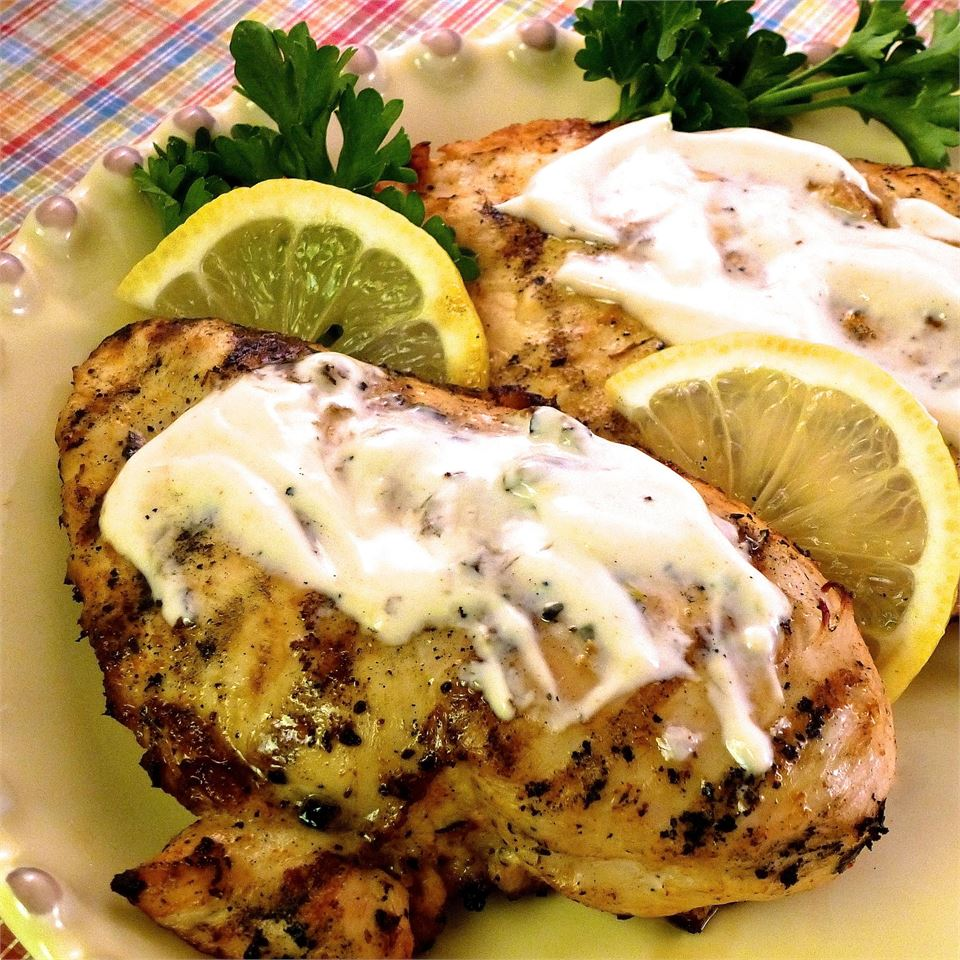

Grilled Lemon Yogurt Chicken

Description
There is something special about what yogurt does to chicken in its smoky, sizzling time over charcoal. It imparts a tangy flavor that lifts all the other flavorings. It tenderizes slightly, without turning the meat into mush. It grills to a caramelized dark brown without tasting burnt.
Ingedients
- ½ cup plain low-fat Greek yogurt
- ½ lemon, juiced
- 1 tablespoon lemon zest
- 1 tablespoon olive oil
- 4 cloves garlic, crushed
- 1 tablespoon paprika
- 1 teaspoon herbes de Provence
- 1 teaspoon salt
- 1 teaspoon ground black pepper
- 1 (5 pound) whole chicken, cut into 8 pieces
Steps
- Whisk together the 1/2 cup yogurt, the juice from 1/2 lemon, lemon zest, olive oil, garlic, paprika, herbes de Provence, 1 teaspoon salt, and black pepper in a bowl. Pour into a resealable plastic bag. Add chicken, coat with the marinade, squeeze out excess air, and seal the bag. Marinate in refrigerator for at least 3 hours.
- Preheat an outdoor grill for medium-high heat, and lightly oil the grate.
- Combine 1/2 cup yogurt, 1 tablespoon lemon juice, and harissa in a small bowl. Set aside.
- Remove chicken from bag and transfer to a plate or baking sheet lined with paper towels. Pat chicken pieces dry with more paper towels. Season with pinch of salt.
- Grill chicken, skin-side down, on the preheated grill for 2 minutes. Turn each piece and move to indirect heat.
- Grill, turning often, with lid down until well-browned and meat is no longer pink in the center, 30 to 35 minutes. An instant-read thermometer inserted into the thickest part of the thigh, near the bone should read 165 degrees F (74 degrees C).
- Serve chicken with the yogurt harissa mixture on the side.